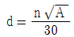
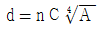
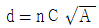
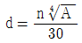
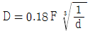
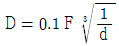
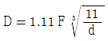
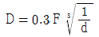

사출(프레스)금형산업기사 (2006-05-14 기출문제)
1과목: 금형설계
1. 다음 성형조건 중 성형품의 치수 변화가 가장 큰 요인은?
- 사출압 과다
- 냉각시간의 부적합
- 게이트의 선정불량
- 사출량 과다
(정답률: 61%)

2. 다음 중 사출기구에 속하지 않는 것은?
- 노즐
- 타이바
- 스크루
- 가열실린더
(정답률: 92%)
3. 폴리프로필렌으로 살 두께 2mm인 성형품을 들려고 할 때 사이드 게이트의 깊이는 얼마가 적당한가? (단, 수지상수 n은 0.7이다)
- 0.7mm
- 1.4mm
- 2.0mm
- 4.0mm
(정답률: 89%)
4. 성형품의 측면에 직접 게이트 위치를 설치한 것으로, 게이트는 금형이 열릴 때 자동으로 절단되어, 흔적 마무리 공정은 필요 없으나, 성형품의 측면에 게이트 흔적이 생기는 결점이 있는 게이트는?
- 핀 포인트 게이트
- 링 게이트
- 탭 게이트
- 서브마린 게이트
(정답률: 55%)
5. 다음 중 런너리스 금형에서 러너리스 시스템의 종류가 아닌 것은?
- 익스텐션 노즐방식
- 트랜스퍼 노즐방식
- 핫러너 방식
- 웰타입 노즐방식
(정답률: 74%)
6. 금형의 강도에 나쁜 영향을 주는 요인이 아닌 것은?
- 불규칙한 형상 또는 재질에 따른 응력집중
- 볼트 또는 압인에 의한 형 맞춤의 영향
- 러너의 단면 모양
- 표면 다듬질의 영향
(정답률: 57%)
7. 핀 포인트 게이트이 지름(d)을 구하는 식으로 옳은 것은? (단, 성형품 살 두께 2.5mm, d=게이트 지름(mm), A=캐비티의 표면적(mm2), C=살 두께 함수, n=수지계수이다.)




(정답률: 32%)
8. 다음 중 에어 이젝팅 밥법에 대한 설명이 아닌 것은?
- 이젝터 판 조립기구가 필요 없다.
- 가동측 이나 고정측 어느 곳에도 사용할 수 있다.
- 밀착력이 강한 성형품을 밀어내기에 적합하다.
- 금형 냉각의 효과를 겸하고 있다.
(정답률: 62%)
9. 사출성형에서 성형나사의 빼기구배로 가장 적당한 것은?
- 1/15 ~ 1/25
- 1/5 ~ 1/10
- 1/2 ~ 1/3
- 2 ~ 3
(정답률: 42%)
10. 혼련롤 또는 압축기에서 나온 성형재료를 주철제 롤 사이를 통과하여 생성하고, 얇은 시트 필름, 바닥재 등 제품을 연속적이고 빠를 속도로 성형하는 방법은?
- 취입성형
- 진공성형
- 캘린더성형
- 압출성형
(정답률: 69%)
11. 블랭크의 지름이 100mm이고, 드로잉 성형된 원통용기의 지름이 55mm일 때 축소률은?
- 55%
- 50%
- 45%
- 40%
(정답률: 71%)
12. 두께 2 mm, 내경 52mm의 원형 컵을 드로잉 하고자 할 때 필요한 드로잉 하중은 약 몇 톤(ton)인가? (단, 재료의 인장강도는 40kgf/mm2, 보정계수는 1.0이다.)
- 10
- 13
- 15
- 18
(정답률: 66%)
13. 펀치가 한쪽으로 쏠리는 현상이 발생하면 제품의 전단면 상태가 다르게 되고, 심하게 되면 제품으로서의 가치를 상실하게 된다. 펀치의 쏠림과 가장 관계가 없는 것은?
- 프레스의 강도불량
- 펀치의 고정불량
- 금형의 안내불량
- 금형의 설치불량
(정답률: 84%)
14. 다음 중 다이 세트(die set)의 종류가 아닌 것은?
- AB형
- BB형
- CB형
- DB형
(정답률: 80%)
15. 간이 금형의 한 종류인 에폭시수지 금형에 대한 특성으로 틀린 것은?
- 재 용해하여 반복 사용할 수 있다.
- 복잡한 형상도 제작 가능하다.
- 기계 가공성이 좋다.
- 고온에 약하다.
(정답률: 64%)
16. 고정 스트리퍼의 종류에 해당 되지 않는 것은?
- 3면 개방 스트리퍼
- 문형 스트리퍼
- 펀치안내 스트리퍼
- 스프링 고정스트리퍼
(정답률: 49%)
17. 프레스의 종류 중 제작이 용이하고, 가공 행정의 하사점 위치가 정확하게 결정되고, 램의 운동곡선이 일단 무난하여 각종(전단, 굽힘, 드로잉)가공 등에 가장 적당한 프레스는?
- 크랭크 프레스
- 너클 프레스
- 편심 프레스
- 마찰 프레스
(정답률: 50%)
18. 펀치둘레에 붙어있는 스크랩이나 스트립을 떼어 주는(벗겨주는) 기능을 갖고 있는 부품은?
- 녹아웃
- 셰더
- 키커
- 스트리퍼
(정답률: 71%)
19. 판 또는 용기의 가장자리 부분에 원형 단면의 테두리를 만드는 가공법은?
- 컬링
- 벌징
- 비딩
- 벤딩
(정답률: 91%)
20. 프로그래시브 다이 설계시 간접 파일럿(Pilot) 핀을 사용하는 이유로 적당하지 않은 것은?
- 제품의 치수 정밀도가 높은 경우
- 제품의 구멍 치수가 큰 경우
- 구멍이 스트립 가장자리에 있는 경우
- 구멍과 구멍 사이 간격이 적은 경우
(정답률: 62%)
2과목: 기계가공법 및 안전관리
21. 판 두께가 2 mm인 연강에 지름 20mm인 구멍을 펀칭하려고 한다. 이때 프레스의 슬라이드 평균속도를 5m/min, 기계효율을 70%라 할 때 소요동력(ps)은? (단, 전단응력은 25 kgf/mm2이다.)
- 약 4.99
- 약 5.99
- 약 6.54
- 약 7.54
(정답률: 35%)
22. 금형에 표면처리를 하는 목적으로 옳지 않은 것은?
- 수명과 생산성 향상
- 내열성 및 마찰증가
- 금형의 강도 증가
- 방식 및 방청
(정답률: 65%)
23. 냉간가공에 의하여 경도 및 강도가 증가하는 것을 무엇이라 하는가?
- 시효경화
- 표면경화
- 가공경화
- 탄성경화
(정답률: 56%)
24. 담금질한 재료를 A1 변태점 이하의 적당한 온도로 가열하여 물, 기름, 공기 등에서 적당한 속도로 냉각시킴으로써 인성을 얻기 위한 열처리는?
- 뜨임
- 담금질
- 불림
- 질화법
(정답률: 74%)
25. 금형 내에 공기를 불어 넣어 부풀려서 성형하는 방법으로 대량생산에 이용되는 금형은?
- 고무 금형
- 요업 금형
- 유리 금형
- 피혁 금형
(정답률: 69%)
26. 공작물의 위치결정뿐 아니라 절삭공구를 안내하기 위하여 공작물 위에 설치하는 장치를 무엇이라 한는가?
- 바이스
- 지 그
- 바이트
- 클램프
(정답률: 86%)
27. 다음 재료 중 방전가공이 불가능한 재료는?
- 탄소공구강
- 아크릴
- 초경합금
- 고속도강
(정답률: 81%)
28. 다음 중 NC 가공의 특징이 아닌 것은?
- 복잡한 형상이라도 짧은 시간에 높은 정밀도로 가공할 수가 있다.
- 기능의 융통성과 가변성이 높아 다품종 소량생산에 적합하다.
- 생산공장에서 가공의 능률화와 자동화에 중요한 역할을 한다.
- 숙련자라야 가공이 가능하고 한 사람이 여러 대의 기계를 다룰 수 있다.
(정답률: 75%)
29. 초경합금을 연삭할 때 가장 적합한 연삭 숫돌 입자는?
- WA
- A
- C
- GC
(정답률: 81%)
30. 숏 피닝은 어떤 부품의 가공에 효과적인가?
- 압축하중을 받는 부품
- 인장하중을 받는 부품
- 반복하중을 받는 부품
- 굽힘하중을 받는 부품
(정답률: 58%)
31. 니이형 밀링머신의 컬럼 면에 설치하여 사용하며, 이 장치를 사용하면 밀링머신의 주축의 회전운동을 공구대의 램의 직선왕복 운동으로 변화시키는 장치는?
- 랙 절삭 장치
- 슬로팅 장치
- 분할대 장치
- 회전 테이블 장치
(정답률: 72%)
32. 전기도금의 반대 현상으로 가공물을 양극(+), 전기저항이 적은 구리, 아연을 음극(-)으로 연결하고, 전기에 의한 화학적인 작용으로 가공물의 표면이 용출되어 필요한 형상으로 가공하는 방법으로 거울면과 같이 광택이 있는 가공 면을 비교적 쉽게 얻을 수 있는 가공법은?
- 전해연삭
- 전해연마
- 전주가공
- 방전가공
(정답률: 74%)
33. 액체 호닝의 장점이 아닌 것은?
- 가공시간이 짧다.
- 가공물의 피로강도를 10% 정도 향상시킨다.
- 형상이 복잡한 것은 가공하기가 곤란 하다.
- 가공물 표면의 산화막이나 거스러미(buff)를 제거하기 쉽다.
(정답률: 64%)
34. 프로그램 된 시간 또는 정해진 시간 만큼 다음의 블록에 들어가는 것을 늦추게 하는 모드는?
- 드웰(G04)
- 원호보간(G02)
- 가속(G08)
- 감속(G09)
(정답률: 71%)
35. 드릴 작업에서 모든 절삭조건이 같은 경우, 회전수가 가장 커야하는 경우의 드릴지름은?
- 3mm
- 6mm
- 12mm
- 19mm
(정답률: 86%)
36. 다음 중 절삭가공이 아닌 것은?
- 밀링
- 인발
- 보링
- 래핑
(정답률: 66%)
37. 측정의 종류에 속하지 않는 것은?
- 직접측정
- 비교측정
- 예측측정
- 절대측정
(정답률: 97%)
38. 방전가공을 할 때 전극재질로 사용하기가 곤란한 것은?
- 청동
- 아연
- 구리
- 황동
(정답률: 76%)
39. 숏 피닝(shot peening) 작업은 경화된 강구를 공작물 표면에 분사하여 피로강도와 기타 성질을 향상시키는 방법으로서 가공조건의 인자가 아닌 것은?
- 분사속도
- 분사각도
- 분사면적
- 분사시간
(정답률: 54%)
40. 머시닝 센터에서 좌표계를 설정하는 준비기능 코드는?
- G28
- G90
- G92
- G99
(정답률: 54%)
3과목: 금형재료 및 정밀계측
41. 철강표면에 알루미늄(AI)을 확산 침투시 키는 법은?
- 세라다이징
- 크로마이징
- 칼로라이징
- 실리코나이징
(정답률: 68%)
42. 금형공구 재료가 갖추어야 할 구비조건이 아닌 것은?
- 메짐이 클 것
- 경도가 높을 것
- 내마멸성이 클 것
- 열처리가 용이할 것
(정답률: 79%)
43. 강은 탄소강과 합금강으로 구분되는데 탄소강은 철에 탄소(C)이외에 4종의 원소가 함유된다. 함유원소가 아닌 것은?
- Si
- Mn
- P
- Cr
(정답률: 63%)
44. 다음 중 고속도 공구강의 기호는?
- SPS
- SKH
- STC
- STS
(정답률: 75%)
45. 섬유강화 복합재료의 일반적인 성질이 아닌 것은?
- 높은 강도와 강성
- 높은 감쇄 특성
- 높은 열팽창계수
- 이방성
(정답률: 57%)
46. 내열용 AI합금 중 Y 합금의 조성으로 가장 적합한 것은?
- Al-Cu-Ni-Si
- AI-Cu-Si-Zn
- AI-Ni-Si-Mg
- AI-Cu-Ni-Mg
(정답률: 49%)
47. 프레스용 강판 중 각종 완구, 부엌 용품, 캔 등에 사용되면 납땜 붙임이 가장 쉬운 것은?
- 냉간압연강판
- 아연도강판
- 주석도금판
- 규소강판
(정답률: 47%)
48. 강의 열처리 조직 중에 트루스타이트 보다 더큰 경도와 강도를 가지는 조직은?
- 오스테나이트
- 펄라이트
- 소르바이트
- 마텐자이트
(정답률: 77%)
49. 8~12% Sn에 1~2% Zn을 넣은 구리합금으로 내식성과 내마멸성이 우수하여 프로펠러, 피스톤 등에 사용되는 청동의 종류는?
- 실루민
- 켈밋
- 포금
- 양은
(정답률: 39%)
50. 열가소성 강화 수지가 아닌 것은?
- ABS
- 에폭시
- 나일론
- 폴리카보네이트
(정답률: 63%)
51. 비교 측정기가 아닌 것은?
- 다이얼 게이지
- 공기 마이크로미터
- 하이트 게이지
- 전기 마이크로미터
(정답률: 65%)
52. 다이얼 게이지로 원통체 공작물의 진원도를 측정하고자 할 때 공작물의 지지에 필요한 공구는?
- V 블록
- 사인 바
- 마이크로미터
- 캘리퍼스
(정답률: 78%)
53. 3차원 측정기의 프로브에서 광학계를 이용한 것으로, 접촉 측정이 부적당하거나, 곤란한 얇은 물체 혹은 연한 물체, 작은 구멍의 좌표측정, 금긋기 선의 위치 측정 등에 쓰이는 프로브는?
- 좌표식 프로브
- 비접촉 프로브
- 전방향성 접촉신호 프로브
- 변위검출형 프로브
(정답률: 63%)
54. 철판의 두께 측정에 가장 적합한 것은?
- 서피스 게이지 (suface gauge)
- 와이어 게이지 (wire gauge)
- 리미트 게이지 (limit gauge)
- 링 게이지 (ring gauge)
(정답률: 68%)
55. 피치 P mm인 미터 수나사에 평균지름 dwmm인 3침(三針)을 넣고, 그 외측 거리를 측정하였더니 M mm 이었다. 나사의 유효지름 d2 mm 구하는 식은?
- d2 = M - 3dw + 0.866025 P
- d2 = M - 3.16568dw + 0.960491 P
- d2 = M + 3dw - 0.866025 P
- d2 = M + 3.16568dw - 0.960491 P
(정답률: 66%)
56. 사인바(Sine bar)에 대한 설명이 옳지 않은 것은?
- 정반 등 정밀평면상에서 사용하는 각도 측정기이다.
- 45° 보다 큰 각의 측정에 많이 쓰인다.
- 롤러의 중심간 거리가 사인바의 규격이다.
- 호칭치수는 100mm, 200mm 2종류가 있다.
(정답률: 80%)
57. 공구 현미경에서 원통의 지름을 측정할 때 조리개의 직경 D 를 나타내는 식은 다음 중 어느 것인가? (단, d : 피측정물의 직경, F : 콜리메이터 렌즈의 초점거리이다.)




(정답률: 45%)
58. 지름 32.00mm의 강구를 측정하였더니 32.02mm이었다. 이 때 오차 백분율은 대략 어느 정도인가?
- 0.6%
- 0.06%
- 6%
- 6.6%
(정답률: 88%)
59. 수준기의 1눈금이 2mm일 때 강도를 1′ 으로 하려면 기포관의 곡률 반경은?
- 약 4.0m
- 약 6.9m
- 약 8.5m
- 약 10.3m
(정답률: 69%)
60. 석(石) 정반의 특징을 설명한 것으로 틀린 것은?
- 녹이 슬지 않는다.
- 온도의 변화에 민감하다.
- 유지비가 싸다.
- 상처발생시 돌기가 생기지 않는다.
(정답률: 70%)